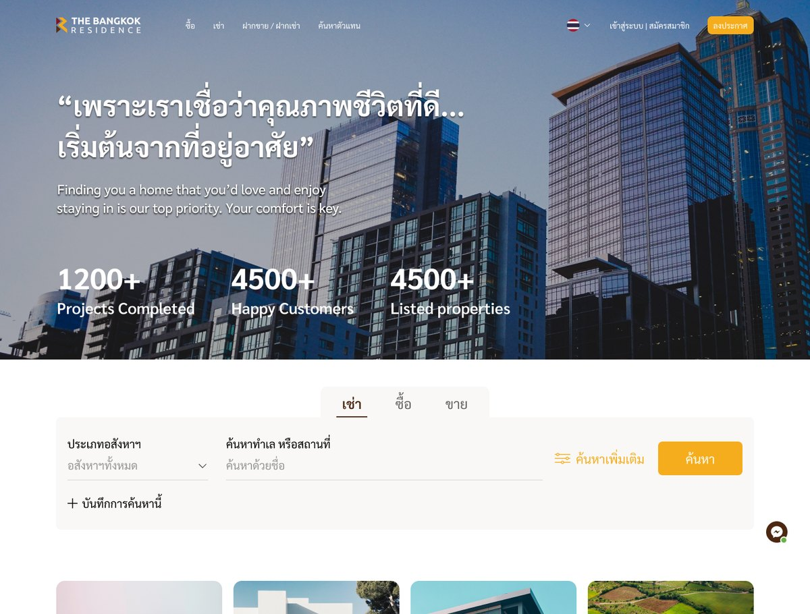
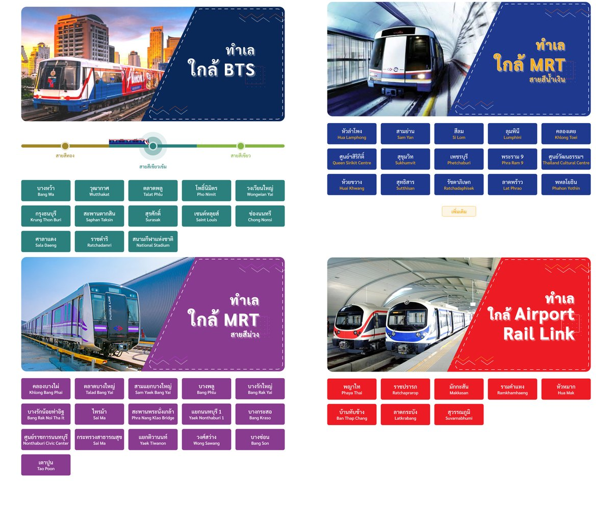
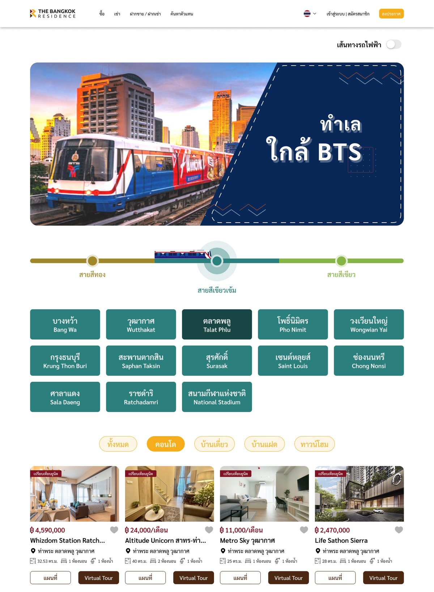
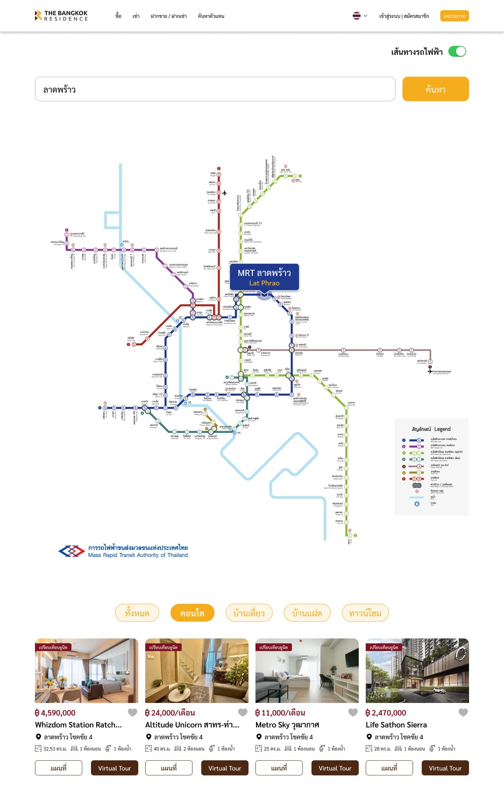
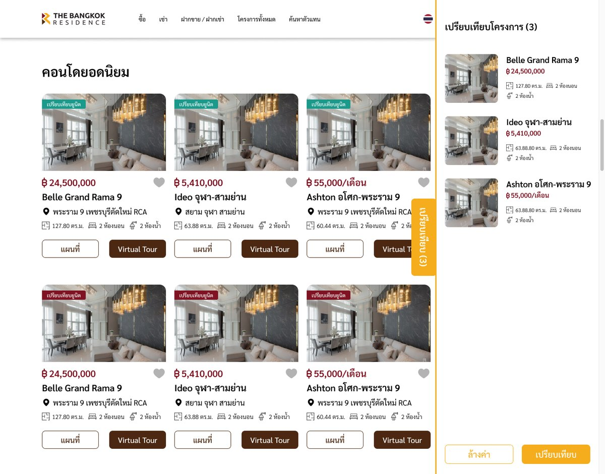
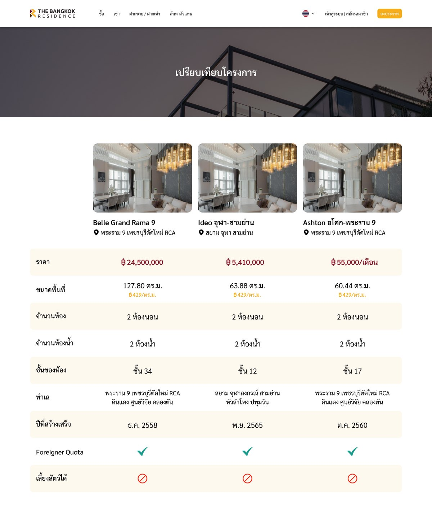
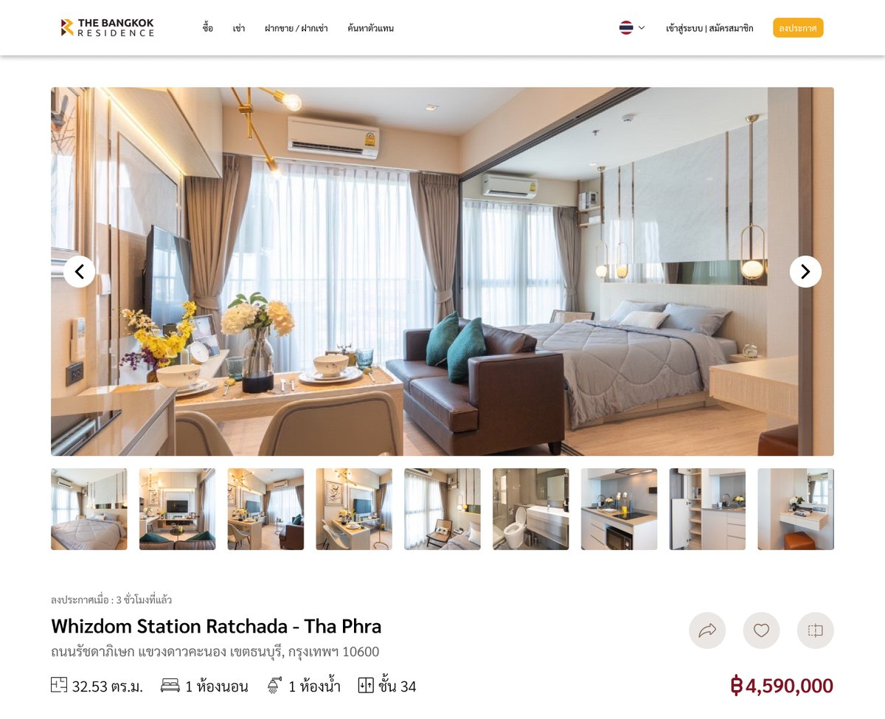
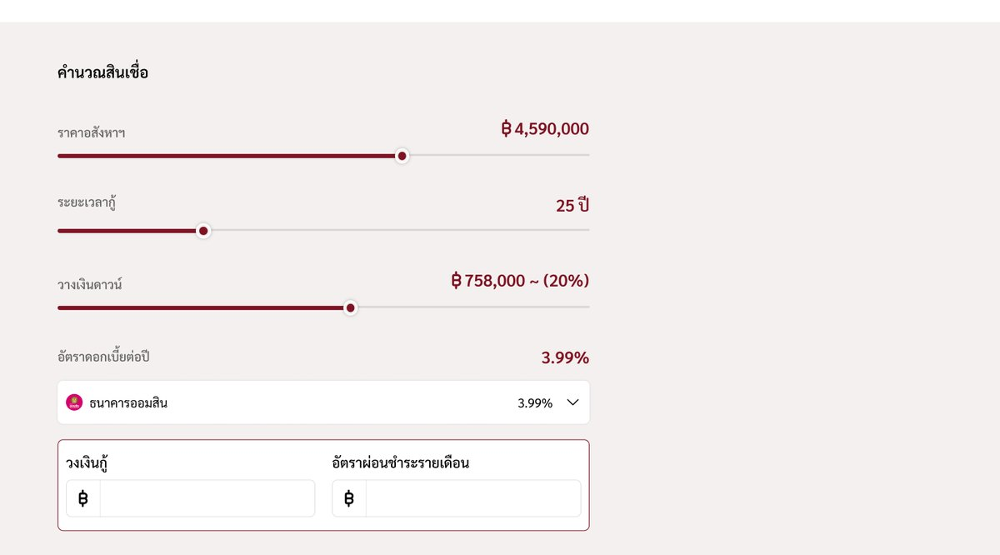

Case Study — 05
The Bangkok
Residence
A redesign of a property search web app, built around finding a home from the Airport Rail Link, BTS and MRT.
Context
The Bangkok Residence is a property agency platform. The client wanted their web app redesigned, and wanted users to be able to search for homes from the Airport Rail Link, BTS and MRT.
This was a pitch. The sales team talked to the client directly and briefed me, and the Business Development team presented the design to the client. I was the only designer on it.
Listings, prices and the figures on the home page are sample content, not results of mine.
Approach
I started by researching several competitors' property sites to see how they handle search and location, then designed the pages myself in Figma.
Research
Reviewed several competitors to compare how they let people search by place.
Structure
Gave transit its own entry points, next to the usual search by type and name.
Screens
Designed search, transit pages, the map, comparison and the listing page.
Decisions I made
Make transit a way in
- Each line has its own section on the home page, coloured like the line, with stations as buttons.
Offer a map as well
- A system map with station search, for people who think in routes rather than names.
Keep searches
- A search can be saved as a short label under the bar, so people do not have to rebuild it.
Compare before contacting
- Up to three projects in a drawer, then side by side on one page.
Search & Saved Search
The home page opens on one search bar, with rent, buy and sell tabs, and a way to keep a search for next time.

- Tabs for Rent, Buy and Sell switch the search without leaving the page
- Property type and a free-text place search sit side by side, with a button for more filters
- "Save this search" keeps a search as a short label under the bar, and a bin icon removes it
Browse by Transit
Because the brief was to find homes from the Airport Rail Link, BTS and MRT, each line gets its own section on the home page.

- Each section uses the line's own colour, so a person can recognise the line before reading
- Stations are buttons with Thai and English names, so a tap goes to the homes near that station
- Long lines keep a "more" button instead of showing every station at once
Transit Page & Map
Two ways into the same results: pick a line and a station, or search on the system map.


- On the BTS page, a line selector sits above the station buttons, with property type tabs and listing cards under them
- On the map page, a switch turns the rail map on, and searching a station highlights it with a callout
- Listings under the map show the station as their location
Compare
Up to three projects can be put side by side before contacting anyone.


- A tab on the edge of the screen shows how many projects are selected and opens the drawer
- The compare page lines projects up by price, size, rooms, floor, location and year built
- Foreigner quota and pets allowed are shown as a tick or a cross, so they can be scanned quickly
Listing Detail
Where a search ends: facts first, then the tools for deciding.


- A gallery with thumbnails leads, then the title, size, rooms, floor and price on one line
- The page continues with details, nearby places, facilities, a floor plan, a location map and a virtual tour tab
- A loan calculator lets people test price, term and down payment without leaving the page
Status
This was a pitch design. I have no results or client feedback to report, and I did not test it with users.
What I'd measure next
These are a plan, not results.
- How many searches start from a transit section or the map, compared with the search bar
- Whether people who use compare go on to contact an agent
- How often saved searches are reused
- Time to reach a first relevant listing, tested with a small group on a station-based task